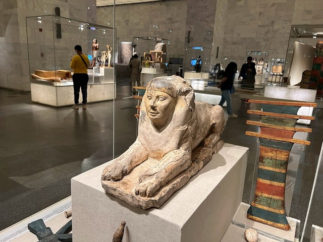
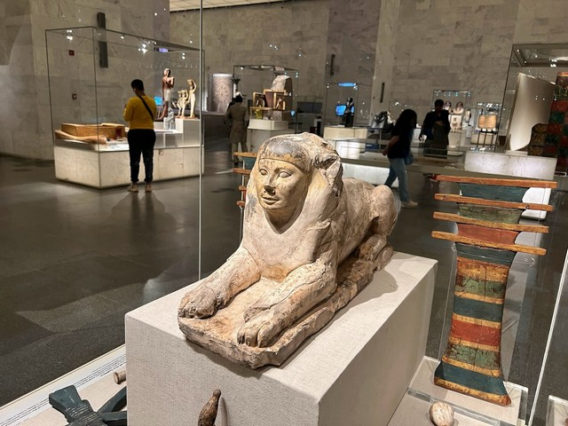

The National Museum of Egyptian Civilization (NMEC) is a cultural
institution located in Cairo, Egypt, dedicated to preserving and
showcasing the rich and diverse history of the Egyptian civilization.
Established with the goal of celebrating Egypt's cultural heritage, the
museum provides a comprehensive insight into the various aspects of the
nation's past, spanning from ancient times to the modern era. Historical
Significance: The museum is strategically situated in Cairo, a city that
serves as a living testament to Egypt's enduring legacy. The decision to
establish the National Museum of Egyptian Civilization was driven by the
desire to centralize and exhibit artifacts that narrate the fascinating
story of Egypt's historical journey. As a country with one of the
world's oldest civilizations, Egypt boasts a wealth of archaeological
treasures that have played pivotal roles in shaping human history.
Exhibits and Collections: The museum's extensive collection covers a
wide range of topics, offering visitors a glimpse into the daily lives,
artistic achievements, and scientific advancements of ancient Egyptians.
The exhibits include artifacts from various dynasties, pharaonic eras,
and key periods of Egyptian history. From intricately carved statues of
gods and pharaohs to everyday items used by ancient Egyptians, the
museum provides a holistic view of the culture and society that
flourished along the banks of the Nile. civilization. that highlight the
diverse facets of ancient and modern Egyptian life.
 
